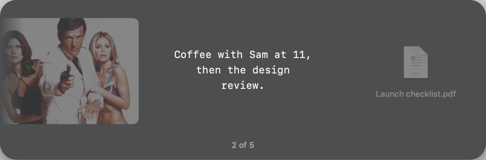
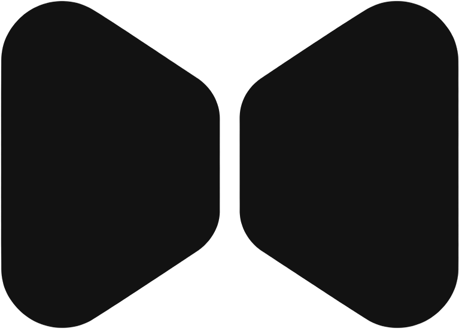
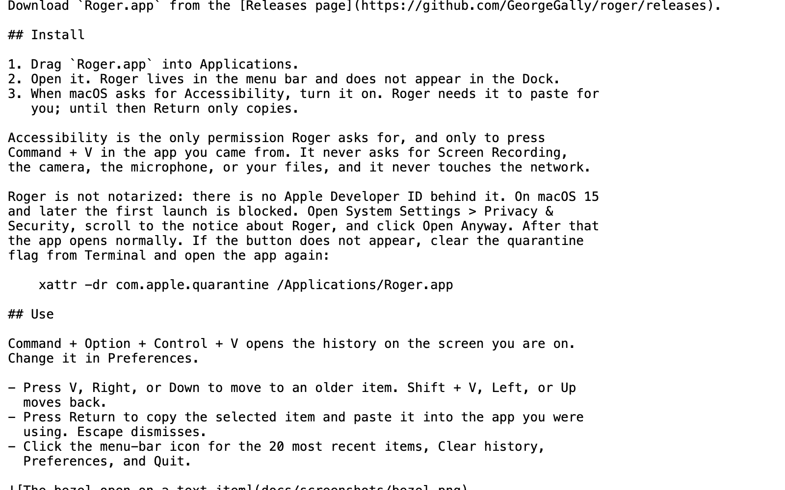
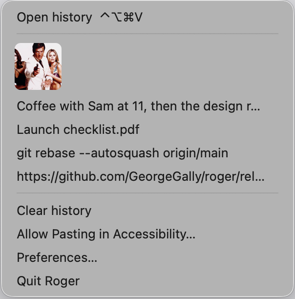

V1 · Studio.
The popup alone on warm paper, the bowtie set small in the corner: a press kit rather than a screenshot.


One capture, five frames.
800 × 400 · exported 1600 × 800V1 · Studio.
The popup alone on warm paper, the bowtie set small in the corner: a press kit rather than a screenshot.


V2 · Over the work.
Floating over a darkened page of real text, so it reads as something you just used instead of something posed.

V3 · Depth.
The history menu sits behind and dimmed, so the bezel is the thing you landed on out of a stack.

V4 · Dark stage.
A charcoal field with a cold halo behind the card, so the glass gets a rim and the image carries a hero section.
V5 · Type-led.
One line of the app's own words in the app's own mono, and the popup kept small underneath it.
Every frame at README scale, on GitHub's light page and its dark one.